View Ticket
Overview
Enables viewing of support ticket by support team. Please read carefully. Click example images to display full size version in new tab/window.
Screenshot
{kind=link}
Actions
Add Reply - When clicked slides page to reply area.
Close - Closes ticket. Ticket can be re-opened by visitor if this option is used.
Lock - Locks ticket. Ticket cannot be re-opened by visitor if this option is used.
Create Dispute - If the dispute system is enabled, this option will appear. Turns standard ticket into dispute.
Notes - For backend notes. If clicked reveals the notepad area. See following screenshot.
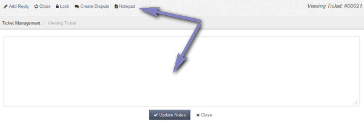
Close - Closes ticket. Ticket can be re-opened by visitor if this option is used.
Lock - Locks ticket. Ticket cannot be re-opened by visitor if this option is used.
Create Dispute - If the dispute system is enabled, this option will appear. Turns standard ticket into dispute.
Notes - For backend notes. If clicked reveals the notepad area. See following screenshot.
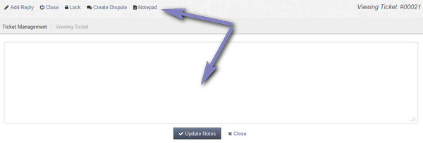
Edit Ticket
A ticket can easily be edited when the edit link is clicked. More info on ticket editing here.
Ticket Assignment
If a ticket has been assigned, a new link will appear by the edit button. Click this to reveal the support staff for assignment update.
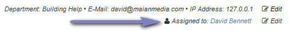
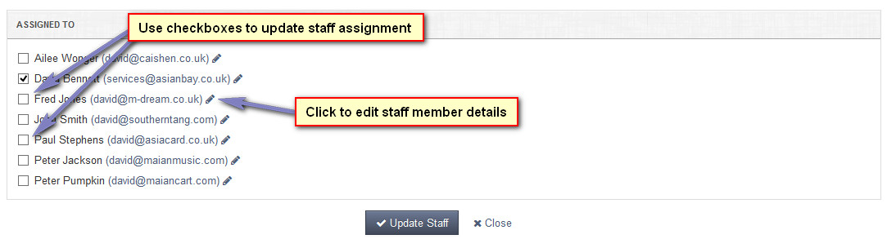
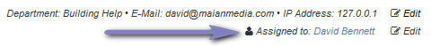
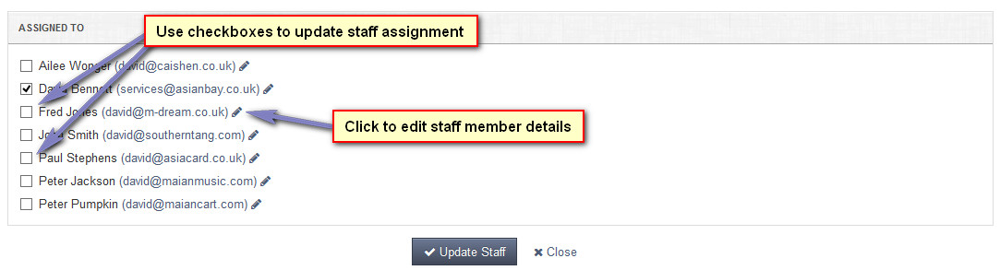
{kind=link}
Reply View
Each reply view contains the reply information, custom field and attachment data (if applicable) and edit and delete links.
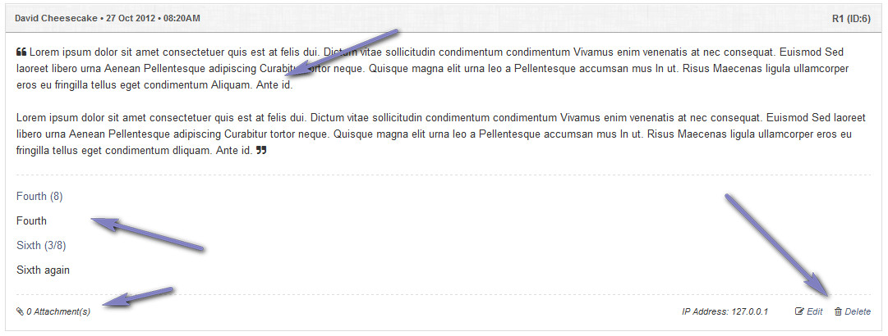
Delete links will produce a prompt to confirm your action.
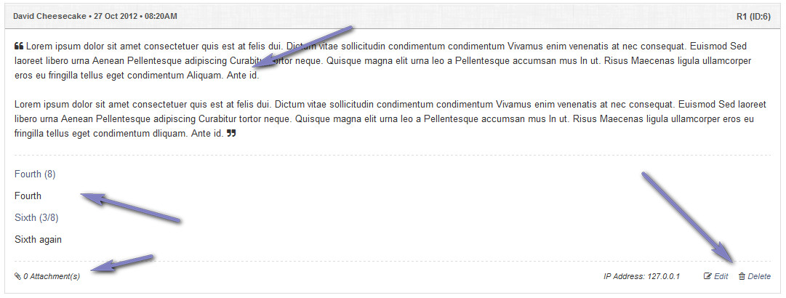
{kind=link}
Delete links will produce a prompt to confirm your action.
Attachments View
If a reply or ticket has attachments, the attachments link will be clickable to reveal the attachment management area for that post.
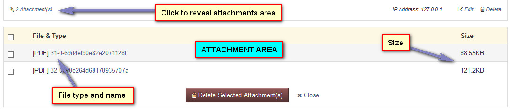
Use the checkboxes to select the attachments you wish to delete and click the "Delete Selected Attachments" button. Delete actions are not reversible. Clicking the attachment file name will envoke the save as dialogue to download the file.
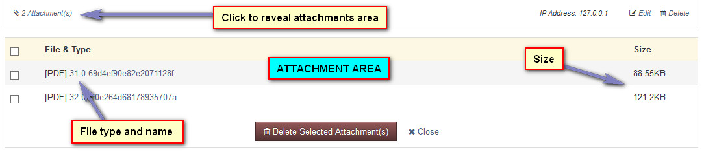
{kind=link}
Use the checkboxes to select the attachments you wish to delete and click the "Delete Selected Attachments" button. Delete actions are not reversible. Clicking the attachment file name will envoke the save as dialogue to download the file.
Support Team Reply Area
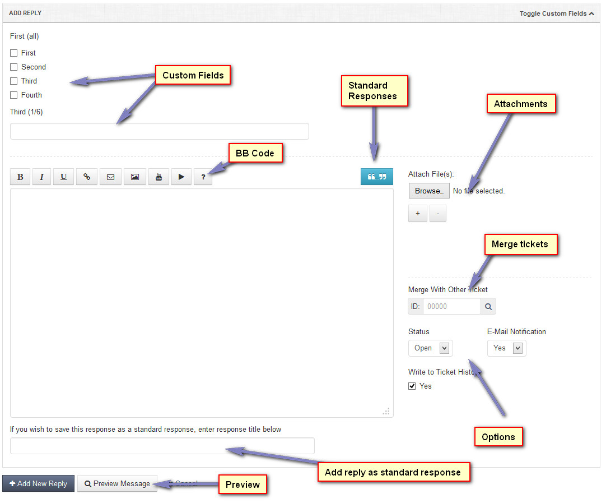
Custom Fields - Custom field data will appear if custom fields are present. Note that there are no restrictions on admin replies, no custom fields are required.
BB Code - Enables code formatting. Always enabled for admin. More info on BB code here.
Attachments - Attachments area. No restrictions for admin. Use the +/- buttons to add/remove boxes.
Standard Responses - Standard responses button will appear if standard responses exist. Click .. button to show drop down and then make selection.
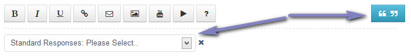
Merge With Other Ticket - Enables merging of ticket to another ticket. See merge notes below.
Status - Status of ticket after reply is added.
E-Mail Notification - If checked, sends all email notifications of reply to visitor.
Write to Ticket History - ONLY available for the main admin user (ID:1). All other team members have all actions written to the ticket history. See information on ticket history below.
If you wish to save this response as a standard response, enter response title below - When you add a reply, the reply can be added as a standard response. To activate this feature, click into box and start typing subject name for new response. When you start typing a new area will appear asking you to select which departments you wish to associate with this response. If none are selected it will apply to all.
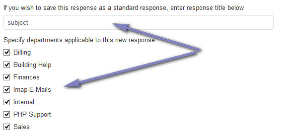
{kind=link}
Custom Fields - Custom field data will appear if custom fields are present. Note that there are no restrictions on admin replies, no custom fields are required.
BB Code - Enables code formatting. Always enabled for admin. More info on BB code here.
Attachments - Attachments area. No restrictions for admin. Use the +/- buttons to add/remove boxes.
Standard Responses - Standard responses button will appear if standard responses exist. Click .. button to show drop down and then make selection.
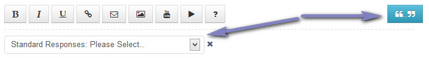
Merge With Other Ticket - Enables merging of ticket to another ticket. See merge notes below.
Status - Status of ticket after reply is added.
E-Mail Notification - If checked, sends all email notifications of reply to visitor.
Write to Ticket History - ONLY available for the main admin user (ID:1). All other team members have all actions written to the ticket history. See information on ticket history below.
If you wish to save this response as a standard response, enter response title below - When you add a reply, the reply can be added as a standard response. To activate this feature, click into box and start typing subject name for new response. When you start typing a new area will appear asking you to select which departments you wish to associate with this response. If none are selected it will apply to all.
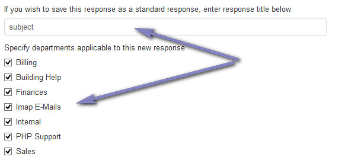
Preview Message
Once you have typed some text into the textarea you can use this option to preview the post. This will format any BB code used. This screenshot shows
the YouTube BB formatting when the preview option is used.

To clear the preview click on the text area text or use the close button.
To clear the preview click on the text area text or use the close button.
Merging Tickets
Here you can merge this ticket with another one after the reply is added. If merged, reply is added to specified ticket and current ticket is deleted.
Enter ticket ID into the merge box or use the option to search for a ticket.
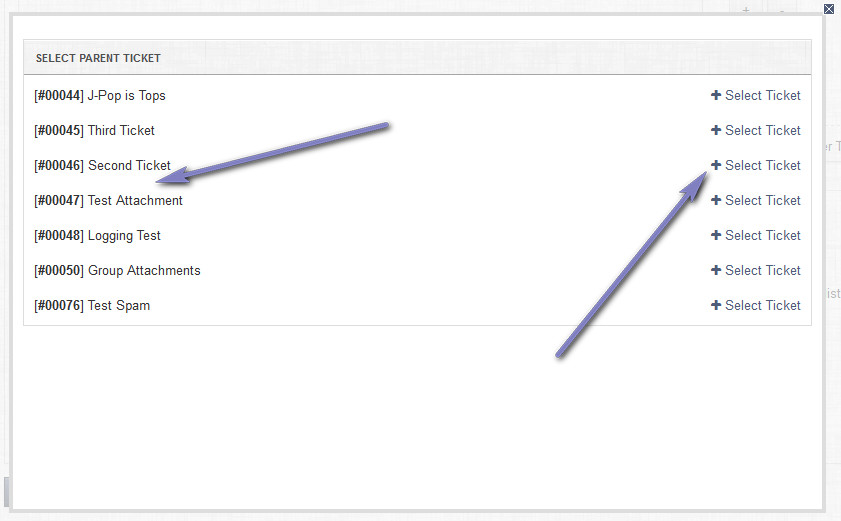
Note that tickets can only be merged with tickets with the SAME e-mail address. Click "Select Ticket" to populate merge box and close merge window.
Enter ticket ID into the merge box or use the option to search for a ticket.
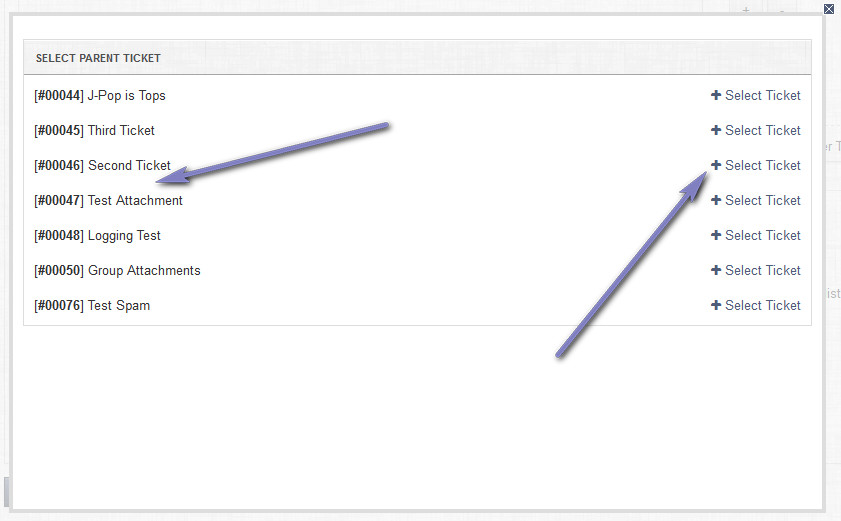
{kind=link}
Note that tickets can only be merged with tickets with the SAME e-mail address. Click "Select Ticket" to populate merge box and close merge window.
Ticket History
The ticket history logs all ticket actions. This can be disabled in the settings.
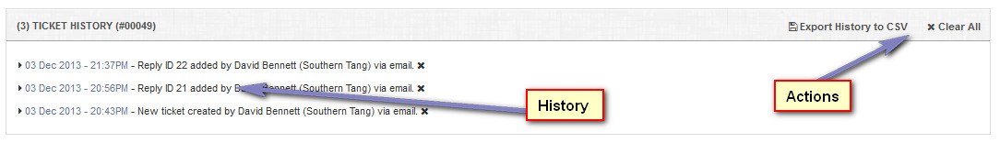
If delete privileges are enabled, a icon appears next to an entry and it can be deleted.
Export History to CSV - Enables exporting of history view to CSV.
Clear All - Appears if delete privileges are enabled. If clicked, all history is cleared. A prompt appears asking you to confirm your action. This option is NOT reversible.
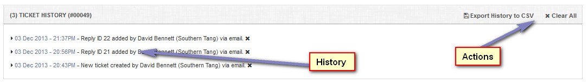
{kind=link}
If delete privileges are enabled, a icon appears next to an entry and it can be deleted.
Export History to CSV - Enables exporting of history view to CSV.
Clear All - Appears if delete privileges are enabled. If clicked, all history is cleared. A prompt appears asking you to confirm your action. This option is NOT reversible.